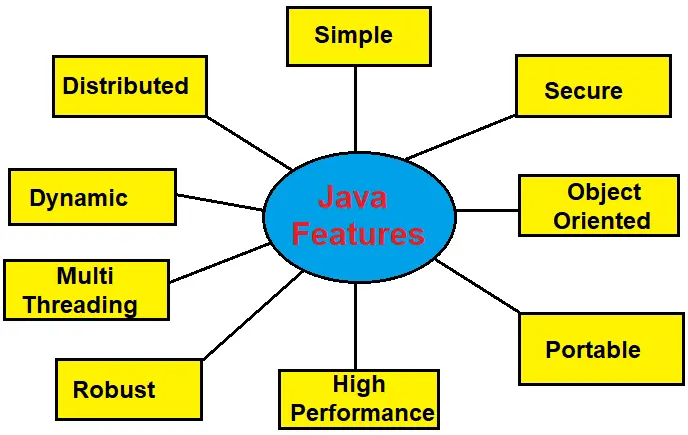

Apply basic programming constructs of java language
Java Programming
java ek high level programming language ha.jieska use softwareas application ko baa ke lie kiya jata
ha.
in other words java ek object origented programming langage ha.jeska use moblie application and web
application ko banna ke lia kiya jata ha.
History of java:
yaha ek object origented lanaguageha ha. jeska arth ki class and object ka use kaeke program ko likha jata ha.java ek platform independent language jeska arth ha ki java me likha gaye code ko kisi bhi computer and oprating system me run kiya jata ha.
Feature Of Java
1. Simple :-
2. Secure :-
java me koi bhi virues aasani se prabes nhi kar sakta ha jeski vajha se user ko data puri tarha se secure rahta ha.
3. Object oriented :-
4. Protable :-
5. High performance :-
6. Robust :-
7. Multi Threading :-
8. Dynamic :-
9. Distributed
Advantage Of Java
- 1. java ek esay programming language ha. jese sikhana kafi aasan hota ha.
- 2. yah ek open source lanugage ha.jeske code ko koi bhi person aasani se dekha and modifiy kar sakte ha.
- 3. yaha ek free language ha.ese user internet se free me download karke use ksr sakhte ha.
- 4. java ek secure language ha. esme virus parveshnhi kar skhta ha.es language me user ka data pure taraha se secure hota ha.
- 5. yaha ek protable language ha/ jeske code ko kisi bhi device per run kiya jata sakta ha.
Disadvantage Of Java
- 1. java ka code dekhane me C and C++ ke comparesion me jada aach anhi hota ha. yah C and C++ ke comparesion me slow hota ha.
- 2. ese aadhk matra me memoryki need hoti ha.
- 3. java low level programming ko support nhi karti ha.
- 4. java programming ko run karne ke liye user ko behter hardware ki need hoti ha.
- 5. esme garbage collectio apne aap hota ha. user apne hishab se ese control nhi kar sakta ha
- 6. yaha unsigned type ko support karta ha
- 7. esme kisi bhi data ka backup nhi liya ja sakta ha.
Example Of Java -
class Simple{
public static void main(string args[]){
system.ot.println("hello! what is your name?");
}
}